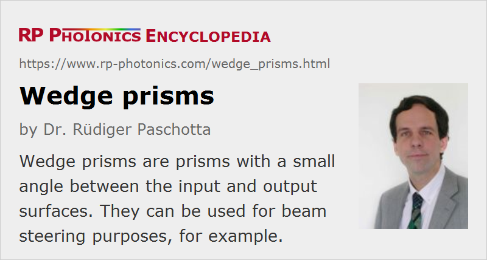

Wedge Prisms
Definition: prisms with a small angle between the end surfaces
Alternative term: wedges
German: Keilprismen
How to cite the article; suggest additional literature
Author: Dr. Rüdiger Paschotta
Prisms having only a small angle (e.g. a few degrees) between the input and output surfaces are called wedge prisms. They are typically used for slightly deflecting (steering) laser beams. For a small angle α between the prism surfaces, the obtained beam deflection angle is approximately (n − 1) α, where n is the refractive index of the prism. For a typical glass prism, where the refractive index is around 1.5, the deflection angle is about half the prism angle.
The input and output surface are usually anti-reflection coated for the intended operation wavelengths. Such prisms are available from stock for various common laser lines and alternatively with broadband coatings.
By combining two wedge prisms to a Risley prism pair, one can realize an adjustable amount of beam deflection, depending on the relative orientation of the prisms.
Precision prisms are available where the wedge angle is very precisely defined, e.g. with a tolerance in the arcseconds range.
Wedge prisms are often made with a circular cross section (so that they could strictly speaking not be called prisms!), suitable for insertion into a rotatable mount. Such a round prism may be placed on a rotating axis, resulting in a rotating beam direction.
Wedges may also be used for fine adjustment of the amount of material inserted into a beam, e.g. in order to adjust the obtained amount of chromatic dispersion for ultrashort pulses. If the wedge angle is sufficiently small, there is no substantially variation of path length within the beam diameter. Variable insertion also causes a slight transverse offset of the beam position.
Wedge prisms are usually not used as dispersive prisms, since the obtained angular dispersion is quite small.
Suppliers
The RP Photonics Buyer's Guide contains 17 suppliers for wedge prisms. Among them:
Questions and Comments from Users
Here you can submit questions and comments. As far as they get accepted by the author, they will appear above this paragraph together with the author’s answer. The author will decide on acceptance based on certain criteria. Essentially, the issue must be of sufficiently broad interest.
Please do not enter personal data here; we would otherwise delete it soon. (See also our privacy declaration.) If you wish to receive personal feedback or consultancy from the author, please contact him e.g. via e-mail.
By submitting the information, you give your consent to the potential publication of your inputs on our website according to our rules. (If you later retract your consent, we will delete those inputs.) As your inputs are first reviewed by the author, they may be published with some delay.
See also: prisms
and other articles in the category general optics
|  |
If you like this page, please share the link with your friends and colleagues, e.g. via social media:
These sharing buttons are implemented in a privacy-friendly way!